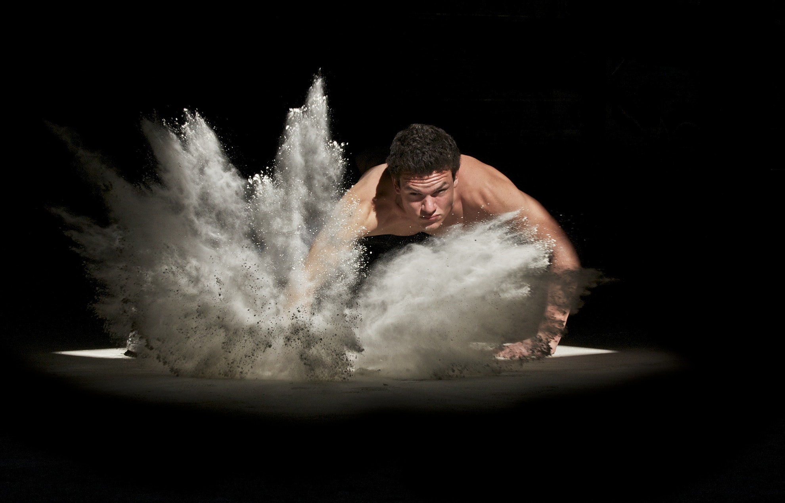
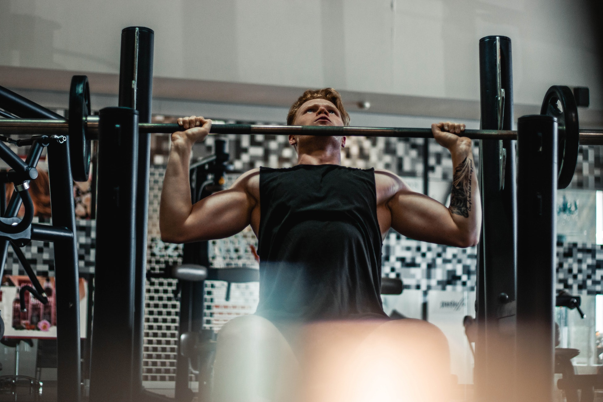
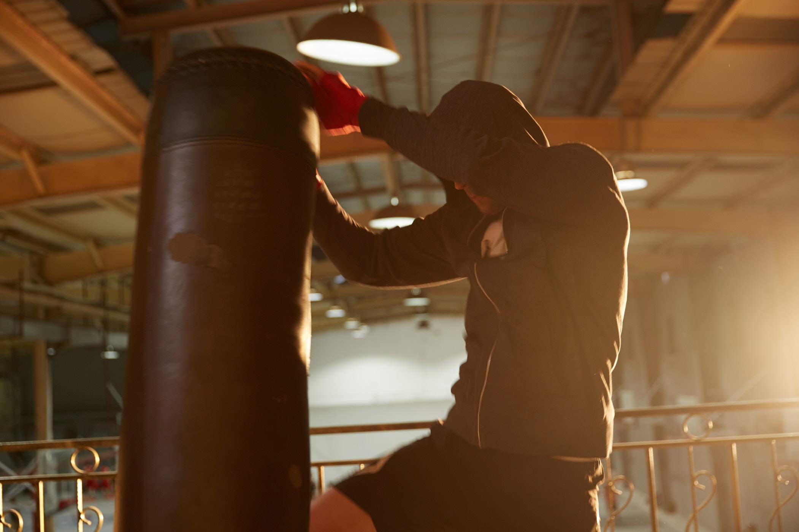
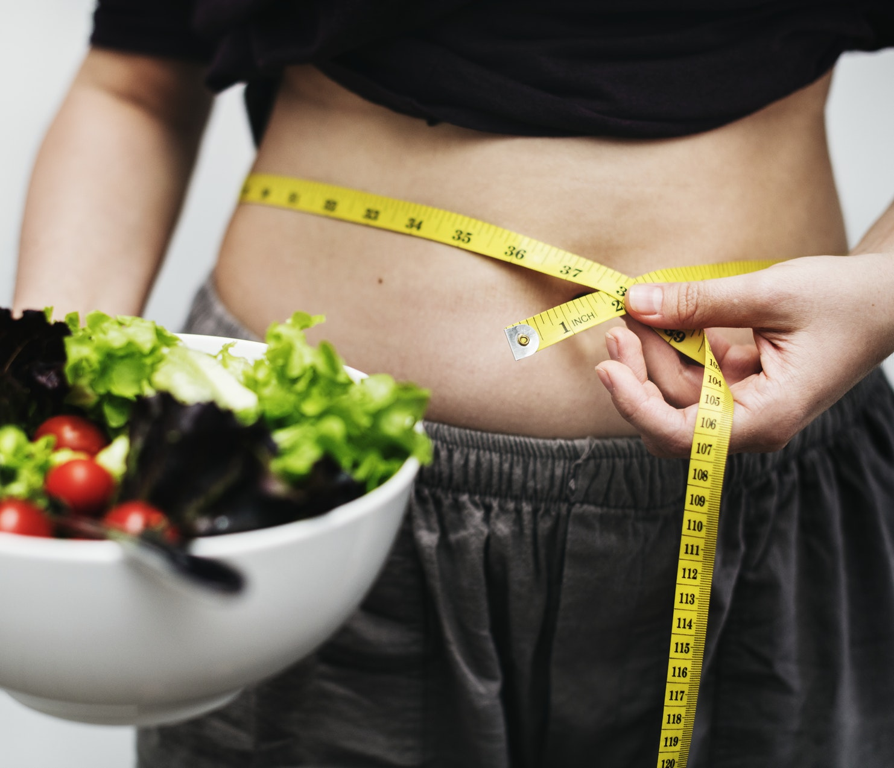
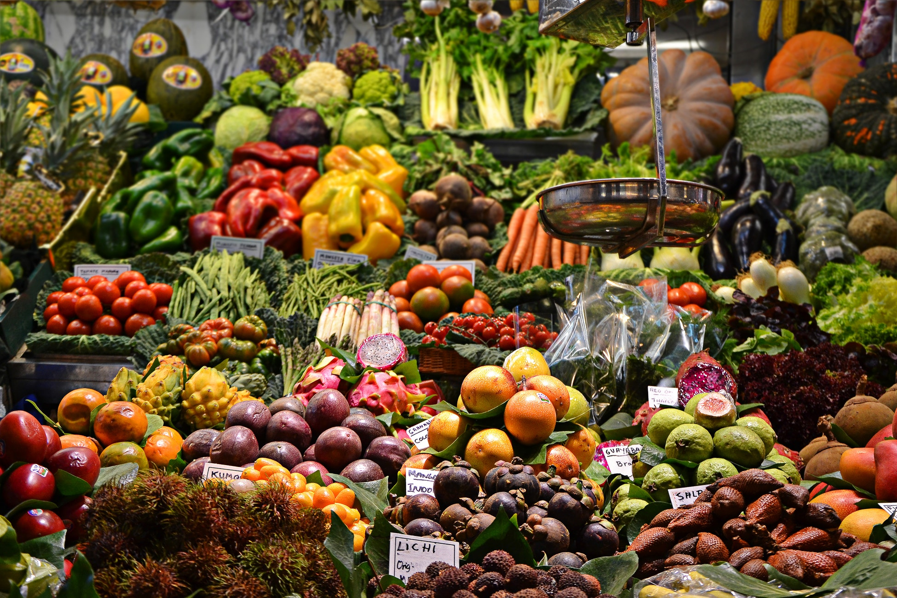
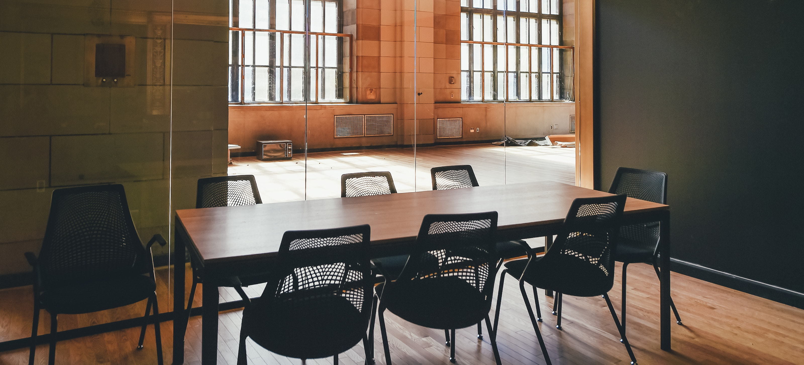

Auzim mereu scuze din partea prietenilor care spun că nu au timp sau că nu pot ajunge să facă sport. În acest articol vă vom prezenta mai multe modalități care sperăm că vor oferi soluția de care aveți nevoie.
Fă exerciții cu propriul corp
Elimină scuza: “Nu am echipamentul potrivit”.
Perfectă pentru cei care: Nu doresc să cheltuiască banii.
Se întămplă uneori ca sala de fitness să fie mai îndepărtată de casă și să faci prea mult timp până acolo (chiar mai mult timp decât petreci făcând exerciții). Chiar și cei mai devotați oameni de printre noi nu suportă să conducă până la sala de forță doar pentru a sta minute în șir până se eliberează aparatele. În loc să înceri să combini diferite greutăți care nu se potrivesc, bazează-te pe greutatea ta corporală. Flotările, abdomenele și genoflexiunile sunt dovedite ca fiind exerciții fizice foarte bune și eficiente. Dacă te simți bine și în forță, o bară de tracțiuni îți poate extinde varietatea exercițiilor.

Banca de la subsol
Elimină scuza: “E atât de greu să ajung la sala de forță”.
Perfectă pentru cei care: Au de fapt un subsol sau un garaj.
Dacă exercițiile cu greutatea corporală nu te ajută, știi că orice încercare va duce doar la un somn bun pe covor, există și alte opțiuni. Dacă dorești să faci cât mai puțin până la sala de forță, atunci este timpul să faci o investiție. Multe magazine sunt pline de aparate de fitness la un preț accesibil care își vor găsi locul undeva în garajul sau subsolul tău.

Găsește un sport care îți place
Elimină scuza: “Mi se pare plictisitor la sala de forță”.
Perfectă pentru cei care: Urăsc banda de alergat.
Mulți oameni care cred că sunt prea leneși pentru sala de sport sunt de fapt prea plictisiți. Chiar și cei mai plictisiți oameni au o activitate fizică de care se pot bucura. Nimeni nu se bucură să alerge 10 kilometri dacă nu sunt în formă, dar sporturi precum boxul, înotul sau cele de echipă sunt câteva dintre activitățile care ar putea să te motiveze să treci peste stilul de viață sedentar și care îți vor pune sângele în mișcare.

Află de ce vrei să fii în formă
Elimină scuza: “Nu vreau să merg la sala de sport”.
Perfectă pentru cei care: Nu au probleme cu relațiile.
Dacă ești leneș, șansele sunt că nu ești cel mai preocupat de aspectul tău. E nevoie de efort să te îmbraci bine. Este nevoie de eforturi pentru a îți îmbunătăți igiena și îngrijirea. Dorința de a primi atenție de la bărbați/femei este o motivație destul de eficientă pentru ca majoritatea tinerilor să se apuce de sport. Ce te face diferit? Ce de îndeamnă să stai pe canapea și să te uiți la încă un episod din serialul tău favorit? Nu îți putem da un răspuns, dar îți putem oferi motivația de a te apuca de mișcare. Oamenii care nu fac sport mor mai tineri și au mai multe probleme de sănătate pe măsură ce îmbătrânesc.

Mănâncă mai sănătos
Elimină scuza: “Va trebui să fac foarte mult cardio”.
Perfectă pentru cei care: Cred că brânza topită este un grup de alimente.
Dacă nu ai puterea de a ajunge la sala de forță în mod regulat, atunci ar fi o idee bună să îți dezvolți dorința de a te împotrivi gustărilor nesănătoase. Este foarte important, de asemenea, să ai un program de masă regulat.

Este vorba despre timp
Elimină scuza: “Nu am timp să merg la sală”.
Perfectă pentru cei care: Lucrează mult.
Persoanelor leneșe nu le place să se abată de la rutina zilnică stabilită. Așa cum spun fizicienii “Un obiect în repaus va rămâne probabil în repaus”. Cel mai bine este să mergi la sală sau să faci exerciții înainte să apuci să te odihnești. Odată ce te-ai așezat pe canapea este puțin probabil să te mai ridici de acolo până dimineață. Deci, mergi la sală cât timp nu ți-ai ieșit din ritm.

Găsește un partener sportiv
Elimină scuza: “Nu am cu cine să merg”.
Perfectă pentru cei care: Au prieteni sportivi.
Este foarte dificil să fii leneș atunci când cineva depinde de tine. Dacă îi promiți prietenul tău că vei merge la sala de sport, va fi greu să stai pe canapea cu gândul că acum trebuia să fii cu greutățile în mână. Va fi dificil să amâni ziua de sport când cineva îți bate la ușă și spune că te așteaptă să plecați către sala de sport.

Fă un mediu mai bun pentru tine
Elimină scuza: “Dar canapeaua și televizorul meu sunt chiar acolo”.
Perfectă pentru cei care: Sunt ușor tentați de canapeaua lor.
Există mulți oameni care nu dețin un televizor și o vor recunoaște fără probleme. Nu fiecare cameră trebuie proiectată în jurul unui televizor. Nu fiecare casă are nevoie de o canapea imensă care să ocupe o mare parte din încăpere. Dacă ești serios în legătura cu forma în care te afli, gândește-te la modul în care ți-ai proiectat viața. Dacă camera de relaxare e proiectată cu un mare bol cu chipsuri și o consolă PlayStation cu ultimele jocuri, atunci ar fi cazul să redecorezi. Este mai greu să te relaxezi dacă ai o cameră cu scaune de lemn mai puțin comode decât canapeaua mare și pufoasă.
